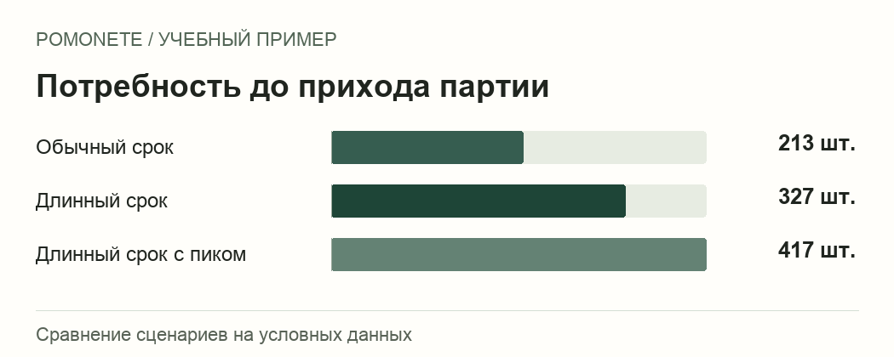

Срок поставки с запасом. Как селлеру Яндекс Маркета учесть редкие задержки
Как запас реагирует на короткий, обычный и длинный срок прихода партии.
Менеджер щёток для стола знает средний срок доставки от поставщика. Проблемы с наличием на Яндекс Маркете возникают в редкие длинные поставки. Селлеру нужно оценить запас на эти дни и цену его хранения, а также выбрать, когда стоит покупать по более короткому маршруту.
Как хранить длительность
Начальная дата должна означать принятие заказа поставщиком. Конечная наступает, когда нужный товар доступен покупателю. Запишите по пути приходы и частичные поставки. Если истории достаточно, рассмотрите верхний квантиль длительности как отдельный сценарий, не дописывая искусственных дат.
Чтобы пересобрать расчёт «Потребность до прихода партии» для своего магазина, перенесите в него исходные числа. В формуле A обозначает «расход в день, шт.», B обозначает «дни до доступности партии», C обозначает «резерв, шт.». Переменную часть оценивают через объём, а разовую добавляют отдельно. Проверьте, что разовая величина ещё не включена в ставку. Запишите рядом период и охват каждого среза. Для оценочных строк оставьте пояснения рядом с исходными значениями. При чтении сводки будет видно, какие из них пока подтверждены.
Потребность до прихода партии = A × B + C
| Условие | Расход в день, шт. | Дни до доступности партии | Резерв, шт. | Потребность до прихода партии |
|---|---|---|---|---|
| Обычный срок | 19 | 9 | 42 | 213 шт. |
| Длинный срок | 19 | 15 | 42 | 327 шт. |
| Длинный срок с пиком | 25 | 15 | 42 | 417 шт. |

В сценарии «Обычный срок» в формулу подставляем расход в день, шт. = 19, дни до доступности партии = 9, резерв, шт. = 42. Получается 213 шт.. Большинство заказов из этого ряда проходило в близкие даты.
В сценарии «Длинный срок» в формулу подставляем расход в день, шт. = 19, дни до доступности партии = 15, резерв, шт. = 42. Получается 327 шт.. Прогноз включает задержку поставки и обработку рабочим складом.
В сценарии «Длинный срок с пиком» в формулу подставляем расход в день, шт. = 25, дни до доступности партии = 15, резерв, шт. = 42. Получается 417 шт.. Одновременно увеличен спрос на часть ходовых размеров.
Если «Обычный срок» взять за исходную точку, «Длинный срок» меняет показатель «потребность до прихода партии» на 114 шт., а «Длинный срок с пиком» на 204 шт.. Между двумя последними строками разница составляет 90 шт. при вычитании второй из третьей. Смотрите, какой именно вход изменился между строками. Если менялись объём и условия одновременно, итог сравнения относится ко всему сочетанию.
При расчёте «потребность до прихода партии» оставляйте исходную точность, пока складываете значения и сверяете строки. В таблице видны 213 шт., 327 шт. и 417 шт., уже округлённые для чтения. При суммировании многих периодов используйте исходные данные. Например, удельные результаты с разными знаменателями нужно пересобрать из числителей и соответствующих объёмов, а затем округлить. Пометьте, где округление применяется, чтобы при передаче отчёта речь шла об одних и тех же числах.
Почему длинный срок сам по себе не решает закупку
Можно держать много обычных товаров, однако это оставляет меньше средств на редкие размеры. Вынесите риск дефицита по ключевым вариантам. Для каждого сравните деньги, которые можно потерять на простое, с затратами дополнительного запаса или более быстрой поставки.
Воспроизводимость здесь начинается с критериев включения. Отметьте, чем «Обычный срок» отличается от «Длинный срок с пиком» и какие наблюдения будут отброшены в каждой строке. Как подтверждение используйте история продаж, журнал остатков и даты фактических приходов. У неполных записей выделите одну причину. Она покажет, какие цифры ещё стоит собирать и какой объём анализа потерян.
В историю поставок запишите обещанную и фактическую дату, момент доступности товара и интервал, в котором возник недозаказ. Разовые всплески спроса и дни без товара полезно отмечать отдельно. Когда данных мало, прогноз на ближайший горизонт лучше держать несколькими уровнями и привязывать каждый к своему действию. При высокой неопределённости небольшая партия с возможностью докупки даёт другую экономику, чем дешёвая крупная партия с долгим ожиданием.
Что сильнее всего меняет результат
Продолжим на базе «Длинный срок» (327 шт.). Разложим расчёт по входам «расход в день, шт.», «дни до доступности партии», «резерв, шт.». Для удобства каждый опыт меняет одну величину примерно на десятую часть. Во всех остальных полях оставляем исходные числа. Для проверки более длинного периода шаги можно подобрать по фактическим колебаниям из истории.
- «Расход в день, шт.» меняется с 19 на 21. При прежних остальных входах получается 357 шт., сдвиг составляет 30 шт..
- «Дни до доступности партии» меняется с 15 на 17. При прежних остальных входах получается 365 шт., сдвиг составляет 38 шт..
- «Резерв, шт.» меняется с 42 на 46. При прежних остальных входах получается 331 шт., сдвиг составляет 4 шт..
Отметьте в рабочей таблице, что «дни до доступности партии» показал сдвиг 38 шт.. Оцените, достаточно ли этой величины, чтобы оправдать смену выбранного режима. Если решение остаётся тем же, ограничьтесь контролем на очередной дате. При перевороте вывода запросите уточнение исходного значения и повторите опыт.
Отдельно посмотрите сочетание длинного срока и повышенного спроса. Эти факторы могут возникать одновременно, например перед праздником. Для нормальной недели не используйте этот вариант как единственный прогноз, но проверьте, какая операция у команды сработает при таком совпадении.
Как зафиксировать новый срок
Определите, какие задержки повторяются в определённые недели, у поставщика или на собственном складе. Проверьте доступность дешёвого ресурса в этих окнах. Согласуйте порог, после которого нужно изменить размер партии или дату заказа.
На очередном пересмотре отметьте, какие сроки реализовались и какой был спрос в дни с доступным запасом. Оценку качества считают на событии, которое наступило после составления прогноза. Так проще отделить неточность метода от изменившейся доступности поставщика. Сохраняйте предположения на момент закупки, чтобы после перемен на рынке можно было объяснить размер партии по датам и объёмам.
Чтобы отделить ошибку оценки от реального изменения, после следующего отчёта соберите «потребность до прихода партии» дважды. Сначала используйте исходное правило, затем замените только один предположенный вход фактическим. Так аналитика селлера Яндекс Маркета покажет, стоит ли тратить время на повторный замер или менять рабочую операцию. В итоговом отчёте сохраните обе даты проверки.